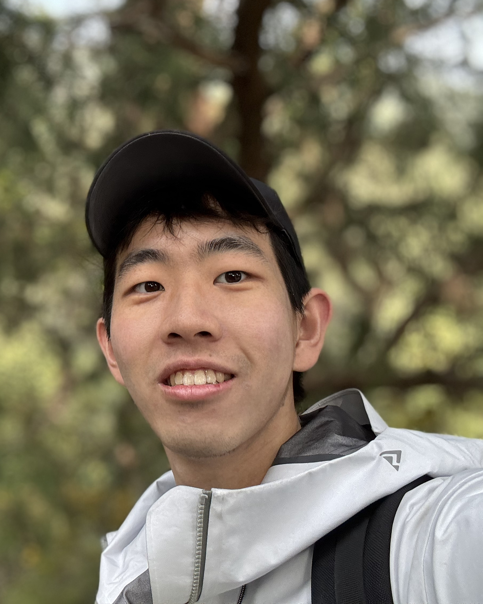

Zixun Huang (黄梓洵)
Undergraduate in Statistics @ PKU
I am a fourth-year undergraduate student in Statistics at Peking University and participated in an academic exchange at the University of California, Berkeley. Throughout my academic journey, I have been fortunate to work closely with Professors Lei Wu, Zeyu Zheng, and Junfeng Hu. My research focuses on the theoretical foundations of machine learning, including scaling laws, and reinforcement learning theory.
Seeking Ph.D. opportunities in IEOR and Statistics (2026 Fall).
Publications
* indicates equal contribution.
Unveiling the Role of Learning Rate Schedules via Functional Scaling Laws
Binghui Li*, Fengling Chen*, Zixun Huang*, Lean Wang*, Lei Wu
NeurIPS 2025 (✨ Spotlight)
OBLR-PO: A Theoretical Framework for Stable Reinforcement Learning
Zixun Huang*, Jiayi Sheng*, Zeyu Zheng
Submitted to AISTATS 2026
Educations
Peking University, School of Mathematical SciencesSept 2022 – Present
B.S. in Statistics
Elite Undergraduate Program for Applied Mathematics (Top 10%)
University of California, BerkeleyJan 2025 – Aug 2025
Visiting Student
Honors
- Hong Sheng Scholarship (Top 12%)2024
- First Prize, Chinese Mathematics Contest (Top 1%)2024
- Yau Contest Groups Prize (Top 5%)2024
- Xiaomi Scholarship (Top 12%)2023
- Gold Prize, Chinese Mathematical Olympiad2021
- Silver Prize, Chinese Mathematical Olympiad2020
Lecture Notes
- A Map to Statistics (in progressing)
- Random Matrix Theory (StatC206)
- Modern Optimization Theory
- Overview of Generative Models
- High dimensional statistics homework (Stat210b)